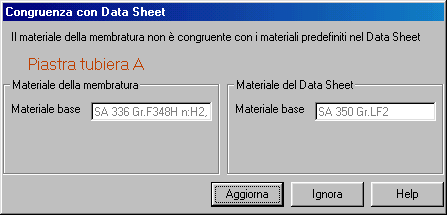

La finestra seguente appare in automatico quando il materiale di una membratura non risulta congruente con le scelte generali specificate nel Data Sheet.

E' opportuno definire in ogni sua parte il Data Sheet dell'apparecchio prima di definirne la geometria di dettagliio. Ciò si ottiene tramite il programma IST. I materiali delle membrature vengono definiti sul foglio 3 del Data Sheet.